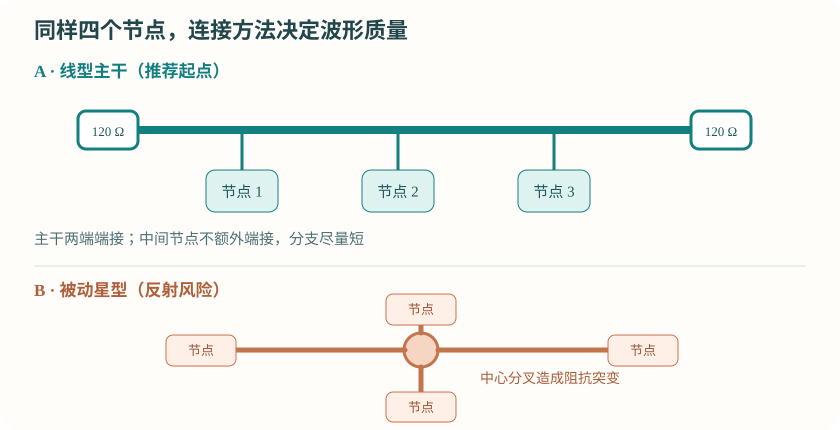

CHAPTER 14 · 物理层拓扑
CAN 网络拓扑：为什么节点越多，线不能随便分叉？
同样的收发器、同样的波特率，把节点接成一条主干与一颗“星”，示波器上却可能出现完全不同的波形。原因不在仲裁算法，而在阻抗不连续与传播延迟。
设计起点：高速 CAN 通常采用两端端接的线型主干、短分支。被动星型不是“每根支线装一个 120 Ω”就能变正确。
先把网络画成一根线，而不是一张逻辑关系图
CAN 是多主、共享介质的总线，不是“多主从”：所有收发器连接到同一差分链路，发送节点通过显性/隐性位进行无损仲裁。逻辑上所有节点可彼此通信，不代表物理线缆可以任意长距离分叉。

电气信号遇到分支点、开路末端或其他阻抗突变时，会产生反射与振铃。短分支不会魔法般消除反射，而是使反射返回得足够早、幅度足够小，以便接收器在采样时仍可靠判决。
为什么“所有星型支线都加 120 Ω”有风险？
在同一条被动总线上，如果有四条支线末端各并联一个 120 Ω，静态等效负载约为 30 Ω，可能超出收发器的设计负载，同时又不能消除分叉处的阻抗突变。因此，被动星型没有一种通用的“每臂都端接”做法。
波特率限制的关键，是远端显性位来不来得及被采样
CAN 仲裁不仅要求接收数据，还要求发送节点能及时观察到远端显性位。传播段要覆盖线缆往返、收发器等器件延迟以及必要裕量。这里先只计算线缆往返时间的示意下界，假设单程传播延迟为 5 ns/m。
例如：主干长度 40 m，线缆往返约 2 × 40 × 5 = 400 ns；在 1 Mbit/s 下，一个位只有 1000 ns。400 ns 不等于完整传播延迟，也不能单凭占比判定 40 米一定可用；还需计入收发器、隔离器、时钟误差、采样点和相位缓冲等因素。
| 主干长度 | 线缆往返延迟 | 500 kbit/s 的位时间占比 |
|---|---|---|
| 20 m | 200 ns | 10% |
| 40 m | 400 ns | 20% |
| 100 m | 1000 ns | 50% |
网络长度与速率的工程经验表在不同设备和线缆下差异很大。不能把“1 Mbit/s 只能 40 m、500 kbit/s 能 100 m”等典型经验值称为 ISO 11898-2 的统一最大长度表。
增加线长或提高速率，时序压力怎样变化？
选择主干长度和通信速率，比较线缆往返传播延迟与单个位时间。结果只检验一项必要预算，不是整网可通信性验证。
线缆传播预算示意
主干长度
通信速率
40 m 主干，500 kbit/s：仅线缆往返约 400 ns；单个位时间 2000 ns；占位时间约 20.0%（未计收发器与其他时序裕量）。
假设传播延迟固定 5 ns/m，忽略分支支路与器件延迟；实际布线应依据所用收发器的时序规格重新计算。
布线评审时，先核实五件事
- 标记两个物理端点：普通高速 CAN 线型主干只在两端端接，中间节点避免额外负载。
- 逐段量线长：把主干、每条分支与累计分支长度记录下来；分支可接受长度取决于位速率、边沿与收发器，没有适用于所有项目的 0.3 m 绝对上限。
- 计算完整传播预算：参考控制器位时序章节，加入驱动器与接收器延迟、隔离路径和采样点位置。
- 检查线缆特性：差分阻抗、双绞结构、连接器、共模扼流圈与 EMC 环境都会影响波形。
- 验证最差场景：最高速、最长线、最多节点、极限供电/温度下测量显性/隐性差分波形、振铃、错误计数和报文完整性。
拓扑图应该画出电缆和端接的真实位置，而不只是方框之间的逻辑连线。
下一章将把两端端接进一步拆开，推导为什么断电测量常见约 60 Ω，以及这个数值为什么并不能证明端接“位置正确”。
参考与限制
- Texas Instruments：CAN 多主总线与端接布局（SLLA555）
- Texas Instruments：CAN 总线两物理末端的端接参考设计（TIDA-01238）
- NXP：复杂多分支网络与 CAN SIC 收发器（特定器件可改善拓扑容限，不代表所有普通收发器适用）
传播数值为标明假设的计算示例，不引用成 ISO 强制限值；物理层验收需要实际示波器与总线分析仪。